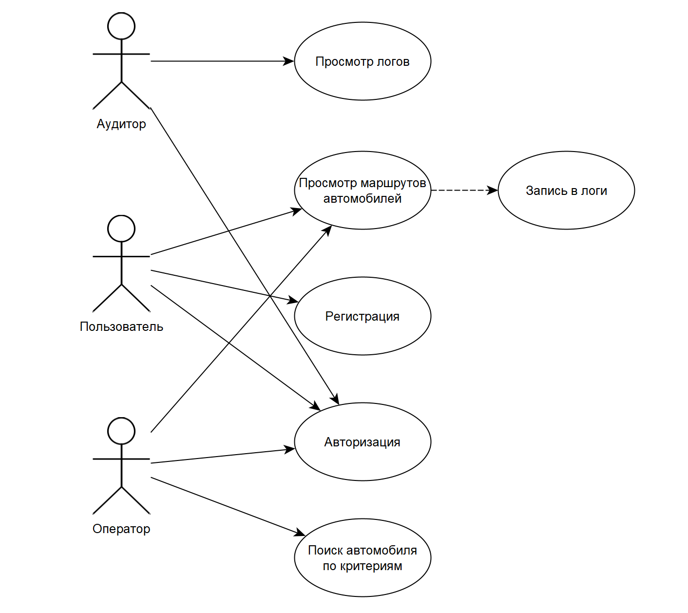
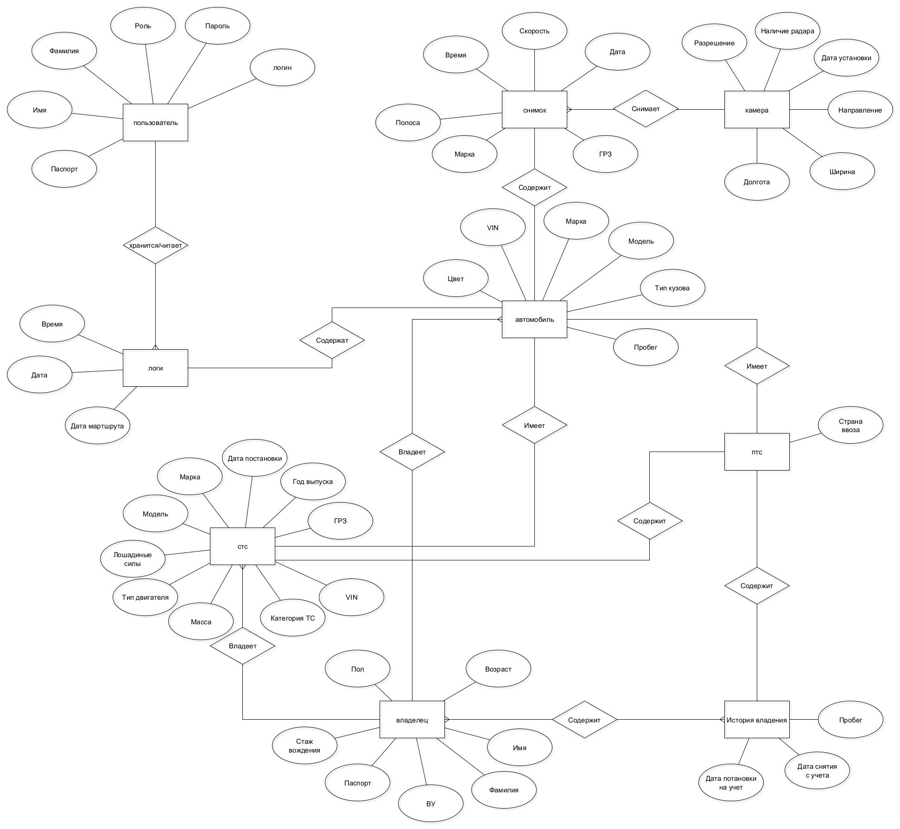
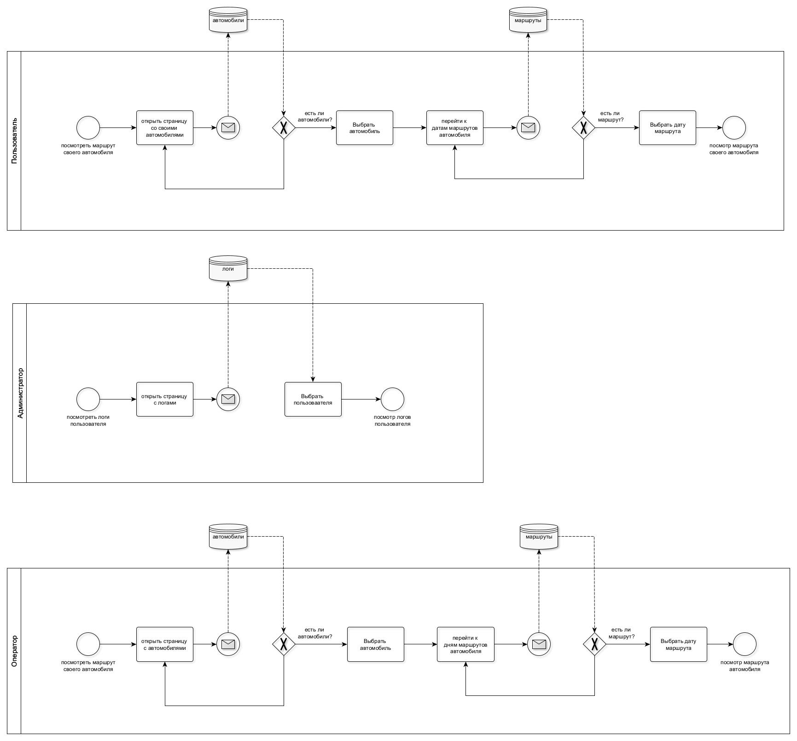
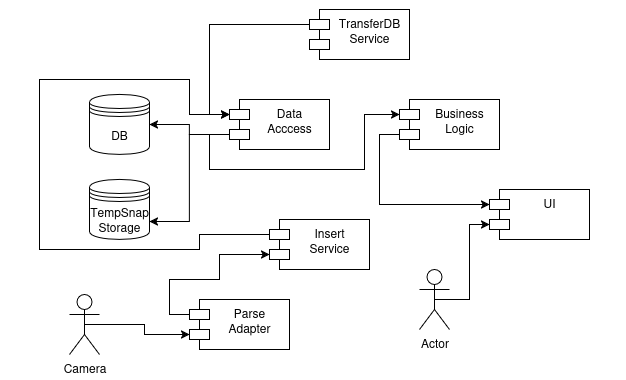
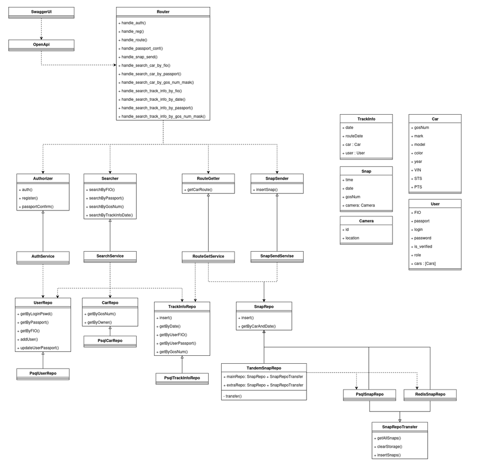

Сервис фиксирует передвижение автомобилей с помощью дорожных камер, которые регистрируют номер, скорость и время проезда. Пользователи могут просматривать только свои маршруты, тогда как операторы могут искать данные по номеру, марке и владельцу автомобиля. Аудиты контролируют доступ к информации и ведут логи всех запросов.
Системы отслеживания маршрутов по камерам фиксируют перемещение транспортных средств с помощью видеокамер и технологий автоматического распознавания номеров (ALPR). Они позволяют контролировать дорожную обстановку, находить угнанные автомобили, анализировать трафик и оптимизировать логистику. Такие системы применяются в правоохранительных органах, транспортных компаниях и городском управлении для повышения безопасности и эффективности передвижения.
| Критерий | NSCAR.online | TRACE | СитиПоинт |
|---|---|---|---|
| Функциональность | Онлайн-мониторинг автопарка, архив видеозаписей | Видеонаблюдение + ГЛОНАСС/GPS, облачное хранение | Видеомониторинг транспорта, анализ резких манёвров |
| Целевая аудитория | Владельцы автопарков, логисты | Транспортные компании, спецтехника | Городской транспорт, служебные автомобили |
| Способы хранения данных | Локально и в облаке | Полностью облачное решение | Локальные серверы + облако |
Разработка системы отслеживания маршрутов по камерам актуальна в условиях роста транспортных потоков, необходимости повышения безопасности и эффективного управления дорожным движением. Внедрение подобных систем способствует повышению прозрачности транспортных процессов, сокращению преступности.



Тип приложения: Мобильное Технологический стэк:

